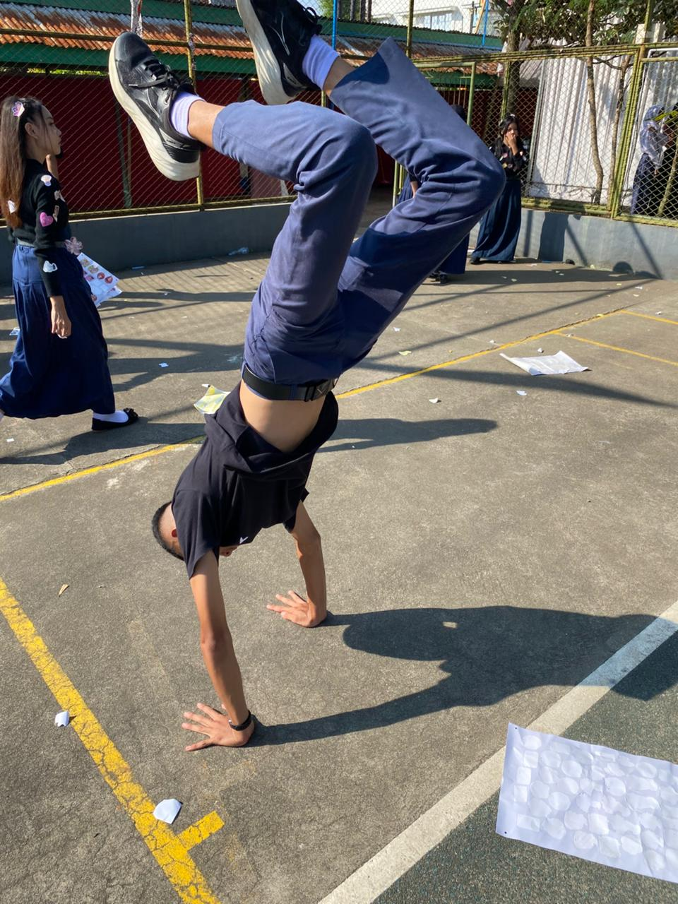

Perjalanan Akademik, Keahlian & Jejak Pengalaman
Mengenal profil saya sebagai siswa SMK TELKOM MALANG jurusan Teknik Komputer Jaringan (TKJ), spesialisasi pembuatan website modern dengan Antigravity dan konfigurasi perangkat MikroTik RouterOS.
Eksplorasi Jaringan Komputer & Pengembangan Web Cerdas
Saya adalah siswa aktif di SMK Telkom Malang pada program keahlian Teknik Komputer Jaringan (TKJ). Memiliki antusiasme tinggi dalam memadukan keahlian infrastruktur fisik jaringan komputer dengan kemampuan rekayasa perangkat lunak antarmuka web modern.
Dalam implementasi teknologi sehari-hari, saya berfokus pada dua pilar kompetensi utama: pembuatan website modern, interaktif, dan efisien dengan memanfaatkan Antigravity, serta administrasi dan konfigurasi MikroTik RouterOS untuk merancang jaringan sekolah maupun institusi yang andal dan aman.
Konfigurasi MikroTik
Kolom BiruRouting statis & dinamis, manajemen bandwidth (Queue Tree), Hotspot Gateway, VLAN switching, hingga keamanan Firewall NAT & Filter Rules.
Web Dev Antigravity
Kolom KuningMembangun website responsif berstandar modern menggunakan Antigravity, antarmuka Tailwind CSS elegan, struktur semantik, dan siap deploy ke Vercel.

ADLI PHIMORRIS R.S
SMK Telkom Malang • TKJ
Portofolio Proyek Teknik Komputer & Jaringan
Koleksi proyek nyata dan implementasi praktikum Teknik Komputer & Jaringan (TKJ) yang mencakup perancangan topologi enterprise, konfigurasi router & switch, administrasi server Linux, serta penggelaran fiber optik.

Arsitektur Jaringan Enterprise & Multi-VLAN Switching
Implementasi jaringan hirarki enterprise menggunakan Cisco Catalyst switch dan MikroTik Router. Mengonfigurasi VLAN 802.1Q trunking, Inter-VLAN Routing, Spanning Tree Protocol (STP), DHCP relay, dan bandwidth management cerdas.

Server Administrasi Linux & Virtualisasi Proxmox/VMware
Pengelolaan server infrastruktur berbasis Ubuntu Server 22.04 LTS dan Proxmox VE. Mengonfigurasi layanan penting seperti DNS (BIND9), Web Server Nginx/Apache terenkripsi SSL, Database MariaDB, serta container Docker.

Instalasi & Penyambungan Kabel Fiber Optik (FTTH & OTDR)
Perancangan jalur distribusi Fiber To The Home (FTTH), terminasi Optical Distribution Cabinet (ODC) dan Optical Distribution Point (ODP), fusion splicing serat optik presisi (<0.02 dB), serta analisis redaman menggunakan OTDR.

Keamanan Jaringan Firewall pfSense & Monitoring Zabbix
Pengamanan gateway jaringan dengan pfSense Firewall, IDS/IPS Suricata untuk pencegahan serangan siber, VPN site-to-site WireGuard, serta dasbor pemantauan utilisasi jaringan dan health server 24/7 menggunakan Zabbix.
Pendidikan & Pengalaman Organisasi
Menempuh pendidikan formal berkelanjutan di bidang teknologi serta aktif memegang tanggung jawab kepemimpinan dan pengelolaan anggaran kegiatan kesiswaan.
Riwayat Pendidikan
SMK TELKOM MALANG
Jurusan: Teknik Komputer Jaringan (TKJ)
Fokus kompetensi keahlian pada arsitektur jaringan komputer, perancangan topologi enterprise, konfigurasi MikroTik RouterOS tingkat lanjut, administrasi sistem Linux, dan integrasi website modern dengan Antigravity.
SMPN 1 BANDUNG
Pendidikan Formal Tingkat Pertama
Menyelesaikan jenjang pendidikan menengah pertama dengan aktif membangun minat pada bidang sains terapan, teknologi informasi, dan keterlibatan organisasi sekolah.
SDN 1 DUWET
Fondasi Pendidikan Dasar
Menempuh pendidikan dasar yang membentuk fondasi budi pekerti luhur, kedisiplinan belajar, dan rasa ingin tahu yang tinggi terhadap eksplorasi dunia digital.
Pengalaman Organisasi
OSIS — Bendahara 1
Tanggung Jawab Strategis Anggaran & Proposal Event
Penyusunan Proposal Kegiatan: Merancang dan menyusun draf proposal resmi untuk pengajuan kegiatan dan event-event besar sekolah.
Pengajuan Dana & Negosiasi Anggaran: Mengajukan anggaran pelaksanaan acara kepada pihak sekolah dan mitra sponsor dengan transparansi penuh.
Kepercayaan 2 Periode: Dipercaya memegang jabatan penting selama dua periode berturut-turut berkat integritas dan kerapian tata kelola administrasi.
Program DLH Adiwiyata Mandiri
Dinas Lingkungan Hidup (DLH)
Berpartisipasi aktif dalam implementasi program Dinas Lingkungan Hidup (DLH) untuk pencapaian predikat Adiwiyata Mandiri. Menggerakkan inisiatif pelestarian lingkungan, edukasi pemilahan sampah, konservasi energi, dan budaya sekolah hijau yang berkelanjutan.
Komitmen Kualitas Berkarya
Kejelasan
Struktur informasi yang lugas tanpa kerumitan visual berlebih.
Privasi Mutlak
Perlindungan informasi pengguna tanpa publikasi data sensitif.
Standar Vercel
Konfigurasi berkas presisi untuk performa global edge terbaik.
Ketepatan
Komunikasi semi-formal yang terbuka, jujur, dan berorientasi hasil.